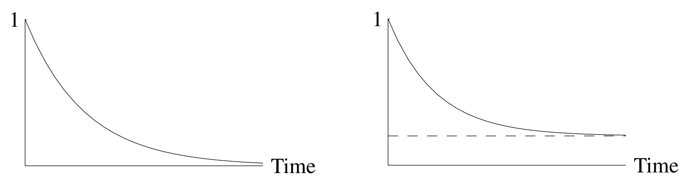
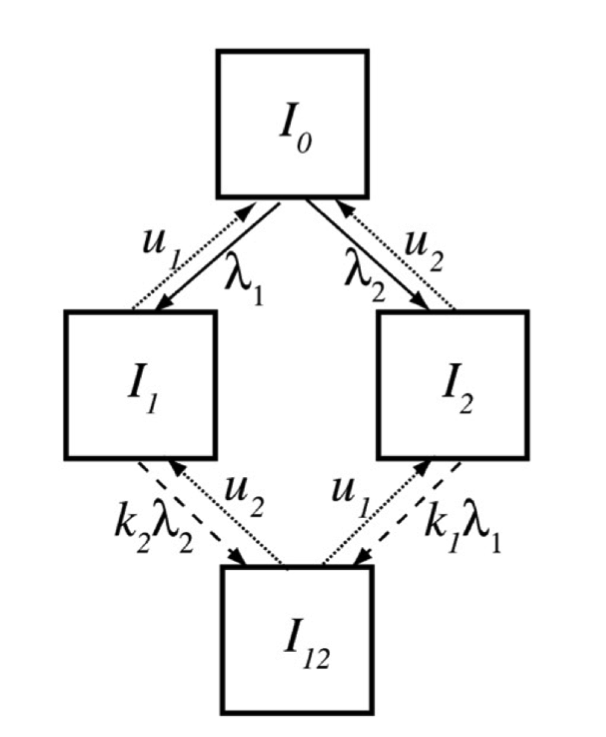

Statistical
Mechanistic (mathematical v. agent-based)
Track individuals' histories of infection, $S_{(0)}, S_{(1)}, S_{(1,2)},...$
Cross-immunity reduces probability of infection or infectiousness
Numerically unwieldy: $2^n$ histories for $n$ strains
Track individuals S, I, or R to each strain, so $O(n)$ equations
"Polarized" immunity: If $i$ and $j$ cross-react, infection with $j$ leads to perfect immunity to $i$ in some fraction of hosts
Probability of an individual being infected with time
Cross-immunity
Does this model have a bias for extinction, coexistence, or neither?
Continuous or discrete?
How many dimensions?
Potentially most efficient with many strains
Support complex interactions
Naturally incorporate demographic stochasticity
Equilibria: Solve for $S_{i}'=I_{i}'=...=0$
Stability analysis: Linearize at equilibria
Invasion analysis: Is $I_{2}'>0$ at $I_{1}^*$?
Integration: Calculate $I_{1}(t), I_{2}(t),...$
Approximate solution to $N'=f(N)$:
$$N(t_0+\Delta t) \approx N_0+ f(N_0) \Delta t = N_1$$
Re-iterating, we get
$$N_{z+1} \approx N_{z}+f(N_{z}) \Delta t$$
$$N_{z+1} \approx N_{z}+f(N_{z}) \Delta t$$
We could assume $f(x)$ is constant for $\Delta t$ (Euler's method)
Even better, average over multiple points!
$$N_{z+1} \approx N_{z}+f(N_{z}) \Delta t$$
$$M_{z+1}=N_z+f(N_{z}) \Delta t$$
$$N_{z+1}=N_z+\frac{1}{2}\left[ f(N_{z})+f(M_{z+1})\right] \Delta t$$
$$k_1=f(N_z) \Delta t$$
$$k_2=f\left(N_z+\frac{1}{2}k_1 \right) \Delta t$$
$$k_3=f\left(N_z+\frac{1}{2}k_2 \right) \Delta t$$
$$k_4=f\left(N_z+k_3 \right) \Delta t$$
$$N_{z+1}=N_z+\frac{1}{6}(k_1+2k_2+2k_3+k_4)$$
Form of immunity (duration, strength, polarity)
Effect of immunity (susceptibility, infectiousness, clearance)
Coinfections and timing of interactions
Accuracy for individuals v. populations
Dimensionality and discretization of strain space
Analytic and numeric approaches, including stochasticity